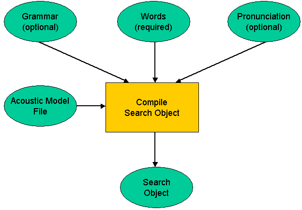

How to Define the Recognition Task
The speech recognizer works on a closed recognition vocabulary. The
set of words or phrases making up the vocabulary are defined as a
vocabulary specification which must be compiled into a
binary format, known as a search object. The process of
creating a search object is illustrated in Figure 1:
|  |
| Figure 1: Creating a search object from a vocabulary specification
|
|---|
The SDK provides two ways to create the search object, which differ in the type information and format of vocabulary specification:
- Phrase List (easy) : This is the simplest approach and involves providing a list of words or phrases to be recognized. It can take optional pronunciations but will generate them automatically if none are provided. (See Defining a Vocabulary Using a Phrase List)
- Grammar (advanced) : A grammar is a more powerful representation that is capable of specifying complex vocabularies more efficiently. (See Defining a Vocabulary Using a Grammar)
Before we describe these methodologies in detail, we will introduce
the notation needed to describe pronunciations and grammars.